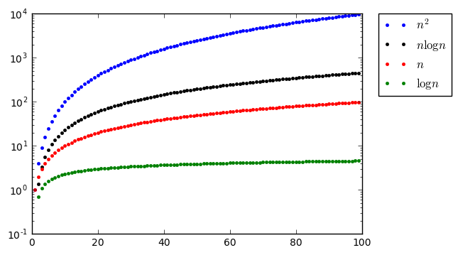

Języki skryptowe - Python
Wykład 5
- timeit, czyli pythonowy stoper
- złożoność algorytmów + przykłady
- notacja "dużego Ο" (Omicron)
- algorytmy sortowania
Dygresja o main
import math
print(__name__) # nazwa skryptu
print(math.__name__) # nazwa zaimportowanego modułu
__main__
math
# instrukcje z main
# z zaimportowanych modułów
# nie zostaną wywołane
if __name__ == "__main__":
print("Hello World!")
Hello World!
timeit
def silnia(n):
"""Zwraca silnię liczby n."""
if n < 2:
return 1 # 0! = 1, 1! = 1
return n*silnia(n - 1)
from timeit import timeit
# timeit(funkcja, setup, number) -> czas wykonania funkcji w s
# funkcja - funkcja do wykonania
# setup - konfiguracja
# number - liczba powtórzeń
timeit("silnia(10)", setup="from __main__ import silnia", number=10)
3.7365999560279306e-05
timeit("silnia(100)", setup="from __main__ import silnia", number=10)
0.0004746449994854629
timeit z linii komend
# silnia.py
def silnia(n):
"""Zwraca silnię liczby n."""
if n < 2:
return 1 # 0! = 1, 1! = 1
return n*silnia(n - 1)
- możemy przetestować naszą funkcję z linii komend
$ python -m timeit -n10 'from silnia import silnia; silnia(10)'
10 loops, best of 3: 9.11 usec per loop
timeit w Jupyter Notebook
def silnia(n):
"""Zwraca silnię liczby n."""
if n < 2:
return 1 # 0! = 1, 1! = 1
return n*silnia(n - 1)
%timeit -n10 silnia(10)
10 loops, best of 3: 3.44 µs per loop
Algorytm - ciąg instrukcji prowadzących do rozwiązania zadania

Koty Ali
- Pierwszego dnia Ala dostała jednego kota. Każdego kolejnego dnia dostaje o jednego więcej niż dnia poprzedniego. Ile kotów ma Ala po n dniach?
- pierwszy dzień: 1
- drugi dzień: 1 + 1
- trzeci dzień: 1 + 1 + 1 ...
Koty Ali - algorytm I
def licz_koty_v1(n):
"""Zwraca liczbę kotów po n dniach."""
n_cats = 0 # Ala nie ma kota
for dzien in range(1, n + 1): # pętla po dniach
for koty in range(dzien): # liczba kotów = nr dnia
n_cats += 1 # dodaj kota
return n_cats # dwie pętle -> n*n operacji
%timeit -n3 licz_koty_v1(10000) # liczba kotów po 10 dniach
3 loops, best of 3: 4.43 s per loop
Koty Ali - algorytm II
def licz_koty_v2(n):
"""Zwraca liczbę kotów po n dniach."""
n_cats = 0 # Ala nie ma kota
for dzien in range(1, n + 1): # pętla po dniach
n_cats += dzien # dodaj koty (= nr dnia)
return n_cats # jedna pętla -> n operacji
%timeit -n3 licz_koty_v2(10000) # liczba kotów po 10 dniach
3 loops, best of 3: 904 µs per loop
Koty Ali - algorytm III
def licz_koty_v3(n):
"""Zwraca liczbę kotów po n dniach."""
return n * (n + 1) // 2 # jedna operacja
%timeit -n3 licz_koty_v3(10000) # liczba kotów po 10 dniach
3 loops, best of 3: 535 ns per loop
Koty Ali - algorytm IV
def licz_koty_v4(n):
"""Zwraca liczbę kotów po n dniach."""
koty = list(range(n + 1)) # n zmiennych w pamięci
return sum(koty) # jedna pętla -> n operacji
%timeit -n3 licz_koty_v4(10000) # liczba kotów po 10 dniach
3 loops, best of 3: 411 µs per loop
range vs list(range)
$ python -m timeit -n10 'range(1000000)'
10 loops, best of 3: 0.684 usec per loop
$ python -m timeit -n10 'list(range(1000000))'
10 loops, best of 3: 52.3 msec per loop
Koty Ali - algorytm V
def licz_koty_v5(n):
"""Zwraca liczbę kotów po n dniach."""
return sum(range(n + 1)) # jedna pętla -> n operacji
%timeit -n3 licz_koty_v5(10000) # liczba kotów po 10 dniach
3 loops, best of 3: 471 µs per loop
Złożoność algorytmu
- złożoność czasowa -> liczba operacji
- złożoność pamięciowa -> ilość potrzebnej pamięci
| Alg I | Alg II | Alg III | Alg IV | Alg V | |
|---|---|---|---|---|---|
| operacje | $n^2$ | $n$ | $1$ | $n$ | n |
| pamięć | $1$ | $1$ | $1$ | $n$ | 1 |
| czas | 4.6 s | 973 $\mu$s | 768 ns | 661 $\mu$s | 475 $\mu$s |
Wartość wielomianu
- Dany jest wielomian:
$$ W(x) = a_0 + a_1\cdot x + a_2 \cdot x^2 + ... + a_n \cdot x^n$$
- Korzystając bezpośrednio z powyższgo wzoru należy wykonać $n$ dodawań oraz $1 + 2 + ... + n = \frac{n\cdot(n+1)}{2}$ mnożeń
Metoda naiwna
def naive(a, x):
"""Zwraca wartość wielomianu o współczynnikach a w punkcie x."""
result = 0
for i, ai in enumerate(a): # i - indeks, ai - współczynnik a_i
result += ai * x**i # W(x) += a_i * x^i
return result
a = range(500)
x = 3.5
naive(a, x)
2.1569220024001972e+274
%timeit -n3 naive(a, x)
3 loops, best of 3: 259 µs per loop
Schemat Hornera
- Zapisując wielomian w postaci:
$$W(x) = a_0 + x\cdot(a_1 + x\cdot(a_2 + ... + x\cdot(a_{n-1} + a_n\cdot x)...)$$
- organiczamy się do $n$ dodań i $n$ mnożeń
Algorytm Hornera
$$W(x) = a_0 + x\cdot(a_1 + x\cdot(a_2 + ... + x\cdot(a_{n-1} + a_n\cdot x)...)$$
- Niech
$$b_n = a_n$$ $$b_{n-1} = b_n\cdot x + a_{n-1}$$ $$b_{n-2} = n_{n-1}\cdot x + a_{n-2}$$ $$...$$ $$b_1 = b_2\cdot x + a_1$$ $$b_0 = b_1\cdot x + a_0$$
- $b_0$ - wartość wielomianu
Horner vs Naive
def horner(a, x):
"""Zwraca wartość wielomianu o współczynnikach a w punkcie x."""
result = 0
for w in a[-1::-1]: # "reverse"
result = result * x + w # b_i = b_{i-1} * x + a_i
return result
a = range(500)
x = 3.5
horner(a, x)
2.156922002400198e+274
%timeit -n3 horner(a, x)
3 loops, best of 3: 98.1 µs per loop
%timeit -n3 naive(a, x)
3 loops, best of 3: 257 µs per loop
Złożoność algorytmów
- czas w zależności od rozmiaru danych (N)
- zajęta pamięć (pomijając dane wejściowe)
- najczęściej interesuje nas złożoność asymptotyczna (dla dużych N)
- np. które człony $$f(n) = n^3 +10\cdot n^2 + 100\cdot n + 1000\cdot\ln(n)$$ są znaczące?
Wkłady od różnych członów
def terms(f):
"""Zwraca kolejne człony funkcji f (oddzielone +)."""
return [term.strip() for term in f.split('+')]
terms("n**2 + 10*n")
['n**2', '10*n']
def eval_f(f, n = 1):
"""Zwraca wartość funkcji f w punkcie n."""
return eval(f)
eval_f("n**2 + 10*n", n = 5)
75
Wkłady od różnych członów
def eval_terms(*terms, n = 1):
"""Zwraca wartości kolejnych członów w punkcie n."""
return [eval_f(term, n) for term in terms]
eval_f("n**2", n = 5), eval_f("10*n", n = 5)
(25, 50)
eval_terms(*terms("n**2 + 10*n"), n = 5)
[25, 50]
Wkłady od różnych członów
def print_cell(cell, width=10):
"""Drukuje pojedynczą komórkę w tabeli."""
print(str(cell).rjust(width), end=' |')
def table_head(f, width=10):
"""Drukuje pierwsze rząd tabeli."""
print_cell("n", width)
for term in terms(f):
print_cell(term, width)
print("\n" + "-" * width * (len(terms(f)) + 2))
table_head("n**2 + 10*n")
n | n**2 | 10*n |
----------------------------------------
Wkłady od różnych członów
def f_as_table(f, *args, width=10):
"""Drukuje tabelę z procentowym wkładem każdego członu."""
table_head(f, width)
for n in args:
print_cell(n, width)
f_val = eval_f(f, n)
for term in eval_terms(*terms(f), n = n):
print_cell(round(term / f_val * 100), width)
print()
f_as_table("n**2 + 10*n", 1, 10, 100, width=5)
n | n**2 | 10*n |
--------------------
1 | 9 | 91 |
10 | 50 | 50 |
100 | 91 | 9 |
Wkłady od różnych członów
$$f(n) = n^3 +10\cdot n^2 + 100\cdot n + 1000\cdot\ln(n)$$
from math import log
n = [10**i for i in range(5)]
f_as_table("n**3 + 10*n**2 + 100*n + 1000*log(n)", *n, width=12)
n | n**3 | 10*n**2 | 100*n | 1000*log(n) |
------------------------------------------------------------------------
1 | 1 | 9 | 90 | 0 |
10 | 19 | 19 | 19 | 43 |
100 | 90 | 9 | 1 | 0 |
1000 | 99 | 1 | 0 | 0 |
10000 | 100 | 0 | 0 | 0 |
Notacja dużego Ο
- Funkcja $f(n)$ jest $O(g(n))$, jeśli istnieją liczby dodatnie $c$ i $n_0$, takie że:
$$\forall_{n>n_0} ~~~~~ f(n) < c\cdot g(n)$$
- Jeśli $f_1(n) \in O(g(n))$ i $f_2(n) \in O(g(n))$, to:
$$f_1(n) + f_2(n) \in O(g(n))$$ $$f_1(n) \cdot f_2(n) \in O(g^2(n))$$
Notacja dużego Ο - przykład
import numpy as np
import matplotlib.pyplot as plt
from math import log
n = np.arange(1, 50, 1) # kolejne liczby naturalne
f = [n**3 + 10*n**2 + 100*n + 1000*log(n) for n in n] # wartości f(n)
g = [2*n**3 for n in n] # wartości g(n)
f_plot, = plt.plot(n, f, 'rs', label="$f(n) = n^3 + 10\cdot n^2 + 100\cdot n + 1000\cdot\ln(n)$")
g_plot, = plt.plot(n, g, 'bo', label="$g(n) = 2\cdot n^3$")
legend = plt.legend(handles=[f_plot, g_plot], loc=2)
line = plt.plot((22, 22), (0, 150000), 'k--')
label = plt.text(52, 75000, "$\\forall_{n\geq 22}$ $g(n) > f(n)$ \n\n"
"$f(n) \in O(n^3)$", fontsize=20)
plt.show()

Przykłady rzędów złożoności - $O(1)$
- Proste operacje: arytmetyczne, logiczne, porównania, przypisania, dostęp do struktury danych
def constant(n):
return n*n # jedna operacja -> O(1)
Przykłady rzędów złożoności - $O(n)$
def linear(n):
result = 0 # 1 * operacja
for element in n: # n * operacja
result += element # n * operacja
result *= 0.1 # n * operacja
return suma
- ostatecznie mamy $3n + 1$ operacji, więc złożoność asymptotyczna -> $O(n)$
Przykłady rzędów złożoności - $O(n)$
def linear(n):
for element in n:
if element == 0:
return True
return False
- złożoność asymptotyczna -> $O(n)$
- może być lepsza (nawet $O(1)$), ale w najgorszym wypadku będzie n operacji
Przykłady rzędów złożoności - $O(n + m)$
def linear(n, m):
result = 0
for element in n:
result += element
for element in n:
result += element
return result
- dwie pętle: $O(n)$ i $O(m)$
- złożoność asymptotyczna $O(n+m)$
Przykłady rzędów złożoności - $O(n^2)$
def quadratic(n):
result = 0
for i in range(n):
for j in range(i, n):
result += 1
return result
- pętla zewnętrzna -> $n$ razy
- pętla wewnętrzna -> $(n-i)$ razy
- w sumie $1 + 2 + ... + n = \frac{n\cdot(n + 1)}{2} = \frac{1}{2}n^2 + \frac{1}{2}n$
- złożoność asymptotyczna: $O(n^2) + O(n) = O(n^2)$
Przykłady rzędów złożności - $O(\log n)$
def logarithmic(n):
result = 0
while n > 1:
n //= 2
result += 1
return result
- w każdej iteracji zmniejszamy $n$ dwukrotnie
- jeśli $n = 2^x$, to wykonamy $\log n$ operacji
- algorytm jest $O(\log n)$
Porównanie złożoności
import numpy as np
import matplotlib.pyplot as plt
from math import log
n = np.arange(1, 100, 1) # kolejne liczby naturalne
f = [n for n in n] # zależność liniowa
g = [n**2 for n in n] # zależność kwadratowa
h = [log(n) for n in n] # zależność logarytmiczna
i = [n*log(n) for n in n] # zależność liniowo-logarytmiczna
g_plot, = plt.plot(n, g, 'b.', label="$n^2$")
i_plot, = plt.plot(n, i, 'k.', label="$n\log n$")
f_plot, = plt.plot(n, f, 'r.', label="$n$")
h_plot, = plt.plot(n, h, 'g.', label="$\log n$")
plt.yscale("log")
legend = plt.legend(bbox_to_anchor=(1.05, 1), loc=2, borderaxespad=0.)
plt.show()

# na wszelki wypadek do testów sortowania dużych tablic
import sys
sys.setrecursionlimit(10000)
Sortowanie bąbelkowe (bubble sort)
- porównuj cyklicznie dwa sąsiadujące elementy
- zmień kolejność jeśli zaburzają porządek
- przerwij, jeśli nie ma co zmieniać
Sortowanie bąbelkowe - przykład
[3, 6, 4, 2] --> [3, 6, 4, 2] --> [3, 4, 6, 2] --> [3, 4, 2, 6]
[3, 4, 2, 6] --> [3, 4, 2, 6] --> [3, 2, 4, 6] --> [3, 2, 4, 6]
[3, 2, 4, 6] --> [2, 3, 4, 6] --> [2, 3, 4, 6] --> [2, 3, 4, 6]
[2, 3, 4, 6] --> [2, 3, 4, 6] --> [2, 3, 4, 6] --> [2, 3, 4, 6]
(brak zmian -> koniec)
Implementacja
def bubblesort(lst):
"""Sortuje podaną listę."""
n = len(lst) # liczba elementów
while True: # powtarzaj do break
swapped = False # ustaw flagę na fałsz
for i in range(n-1): # pętla od 0 do n-2
if lst[i] > lst[i+1]: # porządek zaburzony
lst[i], lst[i+1] = lst[i+1], lst[i] # podmień
swapped = True # ustaw flagę na prawdę
if not swapped: # przerwij jeśli nie było zmian
break
x = [3, 6, 4, 2]
bubblesort(x)
print(x)
[2, 3, 4, 6]
Krok po kroku
def bubblesort_v1(lst):
"""Sortuje podaną listę."""
n = len(lst) # liczba elementów
while True: # powtarzaj do break
swapped = False # ustaw flagę na fałsz
print(lst, end=' ')
for i in range(n-1): # pętla od 0 do n-2
if lst[i] > lst[i+1]: # porządek zaburzony
lst[i], lst[i+1] = lst[i+1], lst[i] # podmień
swapped = True # ustaw flagę na prawdę
print("->", lst, end=' ')
print()
if not swapped: # przerwij jeśli nie było zmian
break
bubblesort_v1([3, 6, 4, 2])
[3, 6, 4, 2] -> [3, 6, 4, 2] -> [3, 4, 6, 2] -> [3, 4, 2, 6]
[3, 4, 2, 6] -> [3, 4, 2, 6] -> [3, 2, 4, 6] -> [3, 2, 4, 6]
[3, 2, 4, 6] -> [2, 3, 4, 6] -> [2, 3, 4, 6] -> [2, 3, 4, 6]
[2, 3, 4, 6] -> [2, 3, 4, 6] -> [2, 3, 4, 6] -> [2, 3, 4, 6]
Optymalizacja I
def bubblesort_v2(lst):
"""Sortuje podaną listę."""
n = len(lst) # liczba elementów
while True: # powtarzaj do break
swapped = False # ustaw flagę na fałsz
print(lst, end=' ')
for i in range(n-1): # pętla od 0 do n-2
if lst[i] > lst[i+1]: # porządek zaburzony
lst[i], lst[i+1] = lst[i+1], lst[i] # podmień
swapped = True # ustaw flagę na prawdę
print("->", lst, end=' ')
print()
if not swapped: # przerwij jeśli nie było zmian
break
n -= 1 # n-te przejście -> n-ty największy na miejscu
bubblesort_v2([3, 6, 4, 2])
[3, 6, 4, 2] -> [3, 6, 4, 2] -> [3, 4, 6, 2] -> [3, 4, 2, 6]
[3, 4, 2, 6] -> [3, 4, 2, 6] -> [3, 2, 4, 6]
[3, 2, 4, 6] -> [2, 3, 4, 6]
[2, 3, 4, 6]
Optymalizacja II
def bubblesort_v3(lst):
"""Sortuje podaną listę."""
n = len(lst) # liczba elementów
while n > 0:
new_n = 0 # miejsce ostatniej zmiany
print(lst, end=' ')
for i in range(n-1): # pętla od 0 do n-2
if lst[i] > lst[i+1]: # porządek zaburzony
lst[i], lst[i+1] = lst[i+1], lst[i] # podmień
new_n = i + 1 # indeks ostatniej zmiany
print("->", lst, end=' ')
print("new_n =", new_n)
n = new_n # ostatnie przejście -> reszta musi być na miejscu
bubblesort_v3([3, 6, 4, 2])
[3, 6, 4, 2] -> [3, 6, 4, 2] -> [3, 4, 6, 2] -> [3, 4, 2, 6] new_n = 3
[3, 4, 2, 6] -> [3, 4, 2, 6] -> [3, 2, 4, 6] new_n = 2
[3, 2, 4, 6] -> [2, 3, 4, 6] new_n = 1
[2, 3, 4, 6] new_n = 0
Złożoność bubblesort
- $n$ operacji -> co najmniej ostatni na swoim miejscu
- $(n-1)$ operacji -> dwa ostatnie na swoim miejscu
- $(n-2)$ operacji -> trzy na swoim miejscu itd...
- $n + (n-1) + (n-2) + ... = O(n^2)$
Sortowanie przez scalanie (mergesort)
- podziel nieposortowaną listę na $n$ "podlist" zawierających po jednym elemencie
- cyklicznie scalaj "podlisty" w posortowane "podlisty", aż zostanie jedna
Start: [3, 6, 4, 2]
Split: [3] [6] [4] [2]
Merge: [3, 6] [2, 4]
Merge: [2, 3, 4, 6]
Algorytm scalania
- mając dwie uporządkowane listy
- porównaj skrajne elementy i mniejszy zapisz w liście wyjściowej
- powtarzaj dopóki jedna z list się nie skończy
- resztę dopisz na koniec wyjściowej listy
Algorytm scalania - przykład
[1, 6, 7] + [2, 3, 4, 5, 8, 9] --> [1]
[6, 7] + [2, 4, 5, 8, 9] --> [1, 2]
[6, 7] + [3, 4, 5, 8, 9] --> [1, 2, 3]
[6, 7] + [4, 5, 8, 9] --> [1, 2, 3, 4]
[6, 7] + [5, 8, 9] --> [1, 2, 3, 4, 5]
[6, 7] + [8, 9] --> [1, 2, 3, 4, 5, 6]
[7] + [8, 9] --> [1, 2, 3, 4, 5, 6, 7]
[] + [8, 9] --> [1, 2, 3, 4, 5, 6, 7, 8, 9]
Algorytm scalania - implementacja
def merge(A, B):
"""Scala posortowane listy zachowując porządek elementów."""
result = [] # scalona lista
while len(A) and len(B): # dopoki obie mają elementy
# dodaj mniejszy element (usuwając go jednocześnie z listy)
if A[0] < B[0]:
result.append(A.pop(0))
else:
result.append(B.pop(0))
result.extend(A) # dodaj resztę
result.extend(B) # (jeśli została)
return result
merge([1, 6, 7], [2, 3, 4, 5, 8, 9])
[1, 2, 3, 4, 5, 6, 7, 8, 9]
Sortowanie przez scalanie - przykład
Start: [1, 4, 2, 5, 6, 3, 9, 7, 8]
Split: [1] [4] [2] [5] [6] [3] [9] [7] [8]
Merge: [1, 4] [2, 5] [3, 6] [7, 9] [8]
Merge: [1, 2, 4, 5] [3, 6, 7, 9] [8]
Merge: [1, 2, 3, 4, 5, 6, 7, 9] [8]
Merge: [1, 2, 3, 4, 5, 6, 7, 8, 9]
Sortowanie przez scalanie - implementacja
def mergesort(lst):
"""Sortuje podaną listę."""
if len(lst) < 2: # lista jednoelementowa
return lst # nie wymaga sortowania
middle = len(lst) // 2 # środek listy
left = mergesort(lst[:middle]) # dziel na dwie części
right = mergesort(lst[middle:]) # i wywołaj merge_sort (rekurencja)
return merge(left, right) # scal dwie listy
mergesort([1, 4, 2, 5, 6, 3, 9, 7, 8])
[1, 2, 3, 4, 5, 6, 7, 8, 9]
Krok po kroku
def mergesort_p(lst):
"""Sortuje podaną listę."""
if len(lst) < 2: # lista jednoelementowa
return lst # nie wymaga sortowania
middle = len(lst) // 2 # środek listy
left = mergesort_p(lst[:middle]) # dziel na dwie części
right = mergesort_p(lst[middle:]) # i wywołaj merge_sort (rekurencja)
# drukuj obecny stan
# użyj kopii, żeby nie modyfikowac tablic
print("left =", left, "\tright =", right,
"\t-->", merge(left.copy(), right.copy()))
return merge(left, right) # scal dwie listy
Krok po kroku
mergesort_p([1, 4, 2, 5, 6, 3, 9, 7, 8])
left = [1] right = [4] --> [1, 4]
left = [2] right = [5] --> [2, 5]
left = [1, 4] right = [2, 5] --> [1, 2, 4, 5]
left = [6] right = [3] --> [3, 6]
left = [7] right = [8] --> [7, 8]
left = [9] right = [7, 8] --> [7, 8, 9]
left = [3, 6] right = [7, 8, 9] --> [3, 6, 7, 8, 9]
left = [1, 2, 4, 5] right = [3, 6, 7, 8, 9] --> [1, 2, 3, 4, 5, 6, 7, 8, 9]
[1, 2, 3, 4, 5, 6, 7, 8, 9]
Złożoność mergesort
- $\log_2 n + 1$ poziomów
- na każdym $n$ operacji
- złożoność czasowa -> $O(n\cdot\log n)$
- złożoność pamięciowa -> $O(n)$
Sortowanie szybkie (quicksort)
- wybierz element rozdzielający (pivot)
- elementy nie większe przenieś "na lewo", resztę "na prawo"
- powtórz rekurencyjnie dla części "lewej" i "prawej"
Sortowanie szybkie - przykład
[1, 4, 2, 5, 6, 3, 9, 7, 8] -> [1, 4, 2, 5, 3, 6, 9, 7, 8]
[1, 4, 2, 5, 3] -> [1, 2, 4, 5, 3]
[4, 5, 3] -> [4, 3, 5]
[4, 3] -> [3, 4]
[9, 7, 8] -> [7, 9, 8]
[9, 8] -> [8, 9]
Sortowanie szybkie - pivot
- kluczowy jest wybór elementu rozdzielającego
- przeciętnie, złożoność algorytmu $O(n\cdot\log n)$, gdy dzielimy dane na mniej więcej dwa równe podzbiory
- gdy pivot jest wartością skrajną, to mamy jeden podzbiór $1$-elementowy i drugi $(n-1)$-elementowy; wtedy złożoność algorytmu $O(n^2)$
pivot - wybór
- stały element: brzeg lub środek -> kiepski wybór
- losowy -> teoretycznie kiepski, ale w praktyce się sprawdza
- mediana -> dobry wybór, ale kosztowny
- mediana z trzech -> mediana z pierwszego, ostatniego i środkowego
Implementacja quicksort
# "jednolinijkowy if"- niezalecany (na potrzeby slajdu)
def quicksort(lst):
"""Sortuje podaną listę."""
if not len(lst): return lst # nie ma co sortować
left, middle, right = [], [], [] # mniejsze, równe, większe
pivot = lst[0] # kiepski wybór
for x in lst:
if x < pivot: left.append(x)
elif x > pivot: right.append(x)
else: middle.append(x)
# wywołaj rekurencyjnie dla "lewej" i "prawej" części
return quicksort(left) + middle + quicksort(right)
quicksort([1, 4, 2, 5, 6, 3, 9, 7, 8])
[1, 2, 3, 4, 5, 6, 7, 8, 9]
mergesort vs quicksort
import random
# 1000 losowych liczb od 0 do 999
x = random.sample(range(10000), 10000)
y = x.copy()
%timeit -n3 quicksort(x)
3 loops, best of 3: 44.7 ms per loop
%timeit -n3 mergesort(y)
3 loops, best of 3: 114 ms per loop
%timeit -n3 quicksort(list(range(1000)))
3 loops, best of 3: 97.1 ms per loop
%timeit -n3 mergesort(list(range(1000)))
3 loops, best of 3: 5.73 ms per loop
bubblesort vs mergesort vs quicksort
def bubblesort(lst):
"""Sortuje podaną listę."""
n = len(lst) # liczba elementów
while n > 0:
new_n = 0 # miejsce ostatniej zmiany
for i in range(n-1): # pętla od 0 do n-2
if lst[i] > lst[i+1]: # porządek zaburzony
lst[i], lst[i+1] = lst[i+1], lst[i] # podmień
new_n = i + 1 # indeks ostatniej zmiany
n = new_n # ostatnie przejście -> reszta musi być na miejscu
def merge(A, B):
"""Scala posortowane listy zachowując porządek elementów."""
result = [] # scalona lista
while len(A) and len(B): # dopoki obie mają elementy
# dodaj mniejszy element (usuwając go jednocześnie z listy)
if A[0] < B[0]:
result.append(A.pop(0))
else:
result.append(B.pop(0))
result.extend(A) # dodaj resztę
result.extend(B) # (jeśli została)
return result
def mergesort(lst):
"""Sortuje podaną listę."""
if len(lst) < 2: # lista jednoelementowa
return lst # nie wymaga sortowania
middle = len(lst) // 2 # środek listy
left = mergesort(lst[:middle]) # dziel na dwie części
right = mergesort(lst[middle:]) # i wywołaj merge_sort (rekurencja)
return merge(left, right) # scal dwie listy
def quicksort(lst):
"""Sortuje podaną listę."""
if not len(lst): # nie ma co sortować
return lst
left = [] # elementy mniejsze
middle = [] # elementy równe
right = [] # elementy większe
pivot = lst[0] # kiepski wybór
for x in lst:
if x < pivot: left.append(x)
elif x > pivot: right.append(x)
else: middle.append(x)
# wywołaj rekurencyjnie dla "lewej" i "prawej" części
return quicksort(left) + middle + quicksort(right)
from timeit import timeit
import random
sizes = [10, 50, 100, 500, 1000, 5000, 10000]
bsort, msort, qsort = [], [], [] # wyniki timeit
for size in sizes:
x = random.sample(range(size), size)
y = x.copy()
z = x.copy()
bs = timeit("bubblesort(x)", number=1,
setup="from __main__ import bubblesort, x")
ms = timeit("mergesort(y)", number=1,
setup="from __main__ import mergesort, y")
qs = timeit("quicksort(z)", number=1,
setup="from __main__ import quicksort, z")
bsort.append(bs)
msort.append(ms)
qsort.append(qs)
bubblesort vs mergesort vs quicksort
import matplotlib.pyplot as plt
bs = plt.plot(sizes, bsort, 'bo', label="bubble")
ms = plt.plot(sizes, msort, 'ro', label="merge")
qs = plt.plot(sizes, qsort, 'go', label="quick")
plt.xscale("log")
plt.yscale("log")
legend = plt.legend(bbox_to_anchor=(1.05, 1), loc=2, borderaxespad=0.)
plt.show()

# css prezentacji
from IPython.display import display, HTML
s = """
<style>
.rendered_html code {
font-size: 75%;
}
</style>
"""
display(HTML(s))